|
Roda JC - Sparta (1-1) 11 maart 2006
|
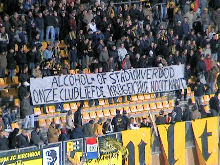
Duidelijke taal.
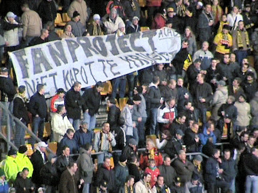
Het doek dat in Arnhem in première ging was ook present op west.
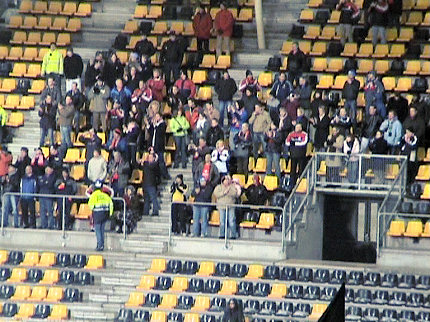
Op het laatste moment werd de uitkaart-verplichting voor de
Sparta-supporters teruggedraaid waardoor er toch nog een kleine honderd
Spartanen op bezoek kwamen.
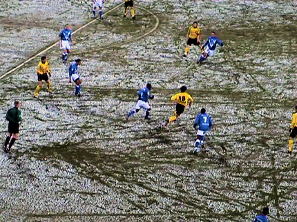
Het hoogstgelegen stadion van Nederland vangt voor de vierde keer dit
seizoen een wit tapijtje.
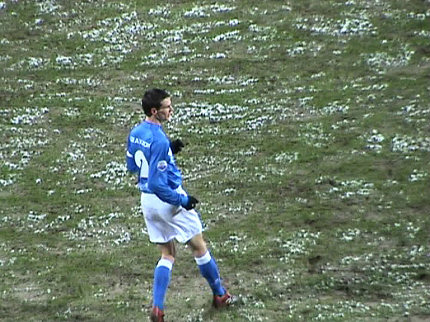
De Fauw, nu nog Spartaan, volgend seizoen speler van Roda JC.
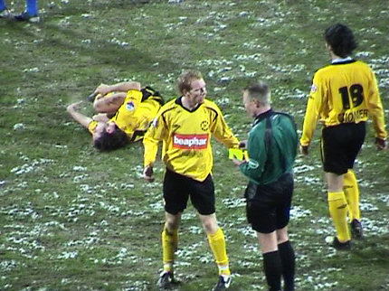
Bodor is onderuitgeschoffeld door Schenkel. De Spartaan ontsnapt met
geel. Lachambre weet dat het rood had moeten zijn.
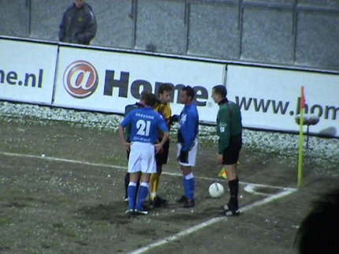
Teveel getreuzel bij het nemen van een hoekschop levert Van den Bergh
een gele kaart op.
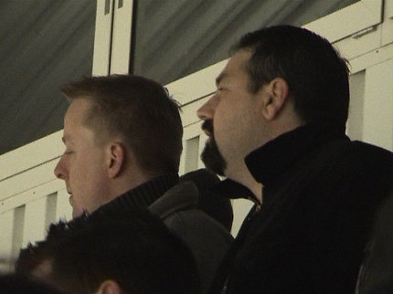
Veel vreemde snuiters in Z16: hier een Black Hero look-a-like.
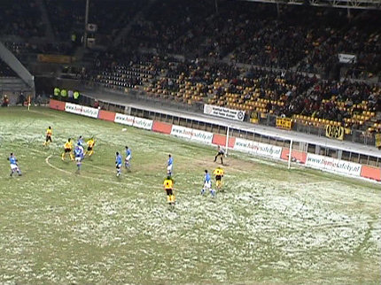
Na de tweede gele kaart van Schenkel brengt Stevens Cristiano voor Voigt.
Niet veel later scoort Cziommer prachtig met een boogbal van grote afstand
over doelman Ponk: 1-0, (57').
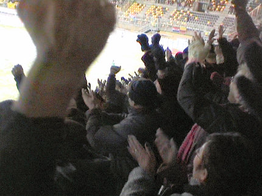
Cziommer is goud waard voor Roda!
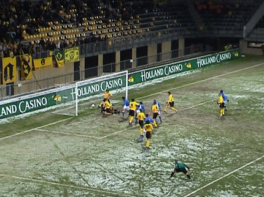
Uit een hoekschop scoort Gudde een "lucky goal" vanuit een chaotisch
gerommel voor het doel: 1-1, (64').
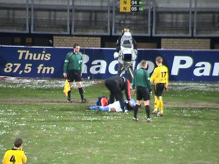
Het zeer defensief spelende Sparta toont zich een meester in tijd-rekken.
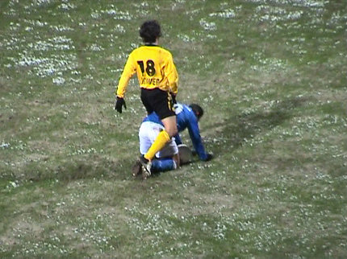
Zowel Cziommer als Van Dijk kregen geel. Wederom twee geschorsten bij
de volgende wedstrijd....
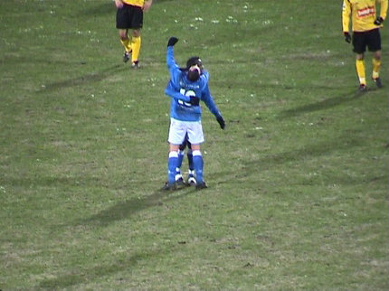
Sparta krijgt waar het voor gekomen is: een punt. Roda kan de play-offs zo
goed als zeker vergeten. De ploeg werkte wel, maar kwam vernuft tekort.
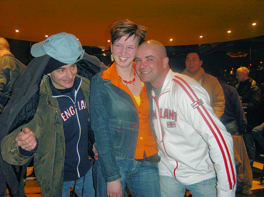
Het zonneprinsesje
wordt lieftallig opgevangen door de Schaesberg Clan.
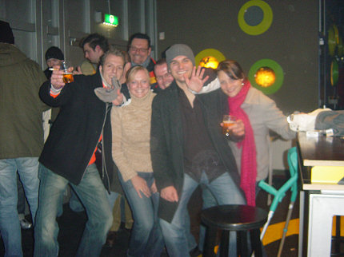
Deze gezelligerds komen uit Brunssum.
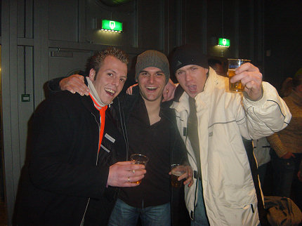
Toch minder zonder de dames erbij....
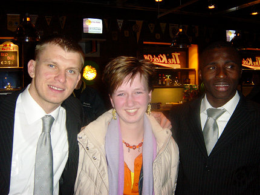
Kujovic en Sonko bezochten de Kickoff.
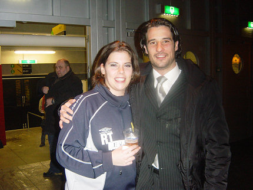
Cziommer kwam iets later, maar wel op eigen initiatief. Hulde!!!
© Koempels Pleasure Dome
|